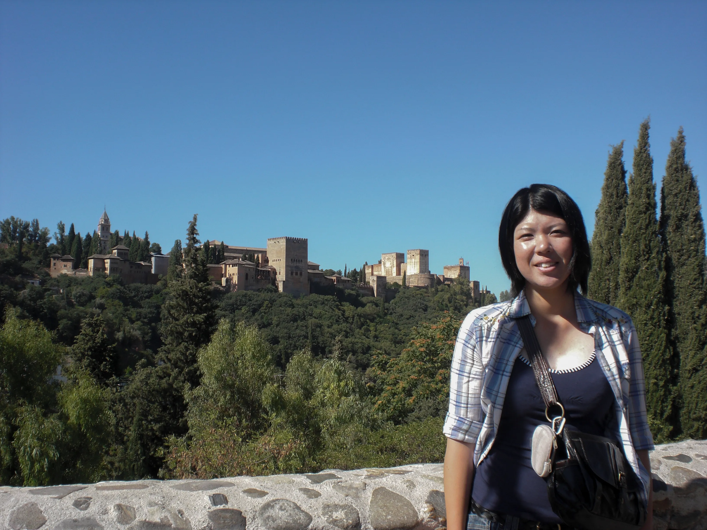
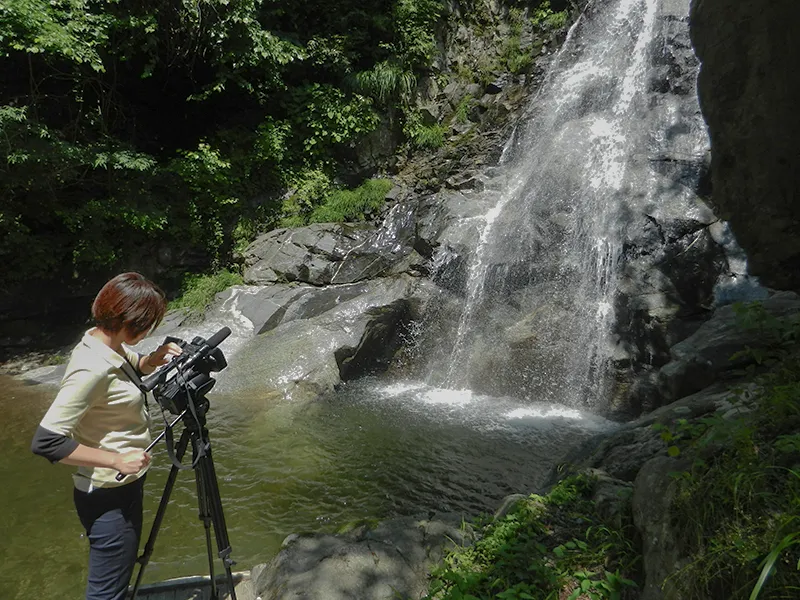
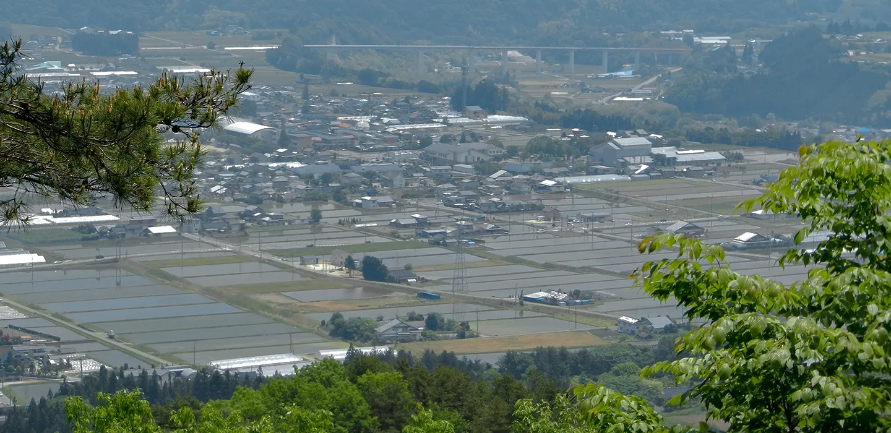
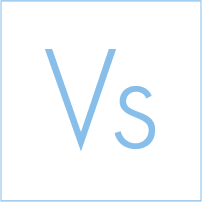

地域を
デザイン
する
Tanaka Tomoko
田中知子
1986年9月生まれ
長野県 南信在住
京都外国語大学 イスパニア語学科（現 スペイン語学科）卒業
在学中のスペイン短期留学をきっかけに地元の良さを実感
地元テレビ局に就職し、放送の仕事に携わる
カメラ・原稿・編集・アナウンスなど幅広い業務を担当
結婚・出産後、放送業務の経験をいかすため広告代理店に転職
動画制作をメインにグラフィックデザインも手掛ける
副業2年でSNSの投稿作成など400本以上納品
2026年3月 Webデザインスクールに入会し、デザインとコーディングを基礎から学ぶ


地元が好き
気づかれていない魅力を、伝わる形に
デザインで地元のみなさんの悩みを解決します。

詳細は各アイコンをクリック
Illustrator
細部まで心を配る、丁寧な描画
Photoshop
世界観を大切にする、自然な写真加工
Premiere
10年の経験を活かした、伝わる動画制作
Canva
スピード感と質を両立したデザイン
Figma
整理整頓された、使いやすいデータ作り

VS Code
仕組みを理解し、デザインを形にする